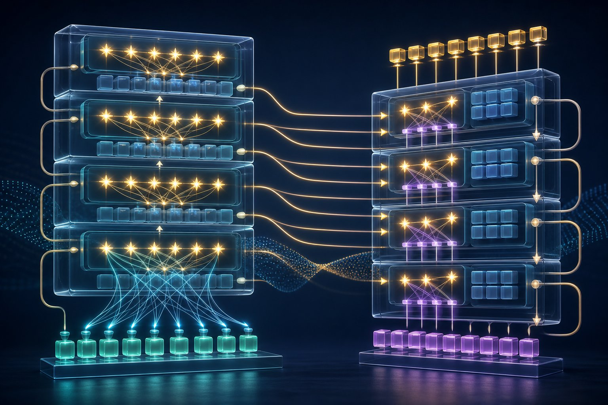

Transformers & large language models
Self-attention lets every token look at every other token. Scale that recipe on text and you get modern LLMs.

Figure 13.1 — Encoder/decoder stacks; attention heads route information between tokens.
Self-attention in one page
Each token makes three vectors: Query, Key, Value. The attention weight from i to j is how well Qi matches Kj (softmax of scaled dot products). The output is a weighted sum of Vj. Multiple heads run this in parallel with different projections so the model can track syntax in one head and coreference in another.
Because every pair of tokens can interact in one layer, long-range dependencies are easier than in an LSTM. Cost is O(n²) in sequence length n — the reason for long-context research (sparse, linear, sliding-window, and efficient attention variants).
Encoder, decoder, encoder–decoder
- Encoder-only (BERT) — bidirectional; great for classification, NER, retrieval embeddings.
- Decoder-only (GPT family) — left-to-right next-token prediction; the LLM chat default.
- Encoder–decoder (original Transformer, T5) — classic translation/summarisation setup.
How an LLM is trained
- Pretrain — predict the next token on a huge corpus (self-supervised).
- SFT — supervised fine-tune on instruction–response pairs.
- Preference optimisation — RLHF (PPO) or DPO so answers match human (or AI) preferences: helpful, harmless, honest-ish.
- Tools / RAG — at inference, the model may call search, code interpreters, or your documents.
Prompting that actually matters
- Be specific about task, format, constraints, and audience.
- Few-shot: show 2–5 examples of the I/O pattern.
- Chain-of-thought: ask for steps on reasoning tasks (when the product allows visible scratchpads).
- Separate untrusted retrieved text from instructions (prompt injection is a real vulnerability).
Hallucinations
Next-token models are trained to continue text fluently, not to query a database of truth. They will invent citations, APIs, and biographies. Mitigate with retrieval, tools, lower temperature on factual tasks, citations, and human review on high-stakes outputs.
Short notes
Transformer = attention + feed-forward + residuals + layer norm, stacked. LLMs are decoder-only Transformers trained to predict tokens, then aligned. Context window is working memory. Scaling laws: more compute/data/params → smoother capability gains, with diminishing returns and data-quality cliffs. Prompting is interface design; it is not a substitute for evaluation.
Point notes
- Q, K, V — match then mix.
- n² attention cost.
- BERT bidirectional; GPT causal.
- Pretrain → SFT → preference tuning.
- Fluent ≠ true. Use RAG/tools/evals.
MCQs
5 questions1. In self-attention, the Value vectors are:
2. GPT-style models are trained primarily as:
3. Self-attention’s naive compute/memory scales with sequence length n as:
4. RLHF is used mainly to:
5. A good defence against factual hallucination for an internal Q&A bot is:
Practice questions
P1. Explain Q, K, V with a library metaphor in 4–5 sentences.
Each word writes a query (“what am I looking for?”), every word files a key (catalogue card), and holds a value (the useful payload). Matching queries to keys decides which books to pull. The output is a blend of those values. Several librarians (heads) search with different cataloguing schemes at once. That blend, plus a feed-forward net, is one Transformer layer.
P2. Write a prompt for extracting {name, date, amount} as JSON from messy receipts. Include one constraint that reduces hallucination.
Extract fields from the receipt text.
Return ONLY valid JSON with keys name, date, amount.
If a field is not clearly present, use null (do not guess).
Date format YYYY-MM-DD. Amount as a number in the receipt currency.
Receipt:
""" ... """The null-if-missing rule is the anti-hallucination constraint. Few-shot examples of nulls help more.
P3. Why might a 7B model with excellent retrieval beat a 70B closed-book model on company policy questions?
Policies are not in the pretraining mix (or are outdated). Retrieval supplies the actual text. A smaller model that quotes the right paragraph will beat a larger model that interpolates “typical HR language.” Capability ≠ knowledge of your corpus.